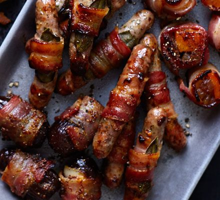

Pigs in Blankets with Maple Syrup

A True Christmas Classic!
Pigs in Blankets: a party essential made even better with
maple syrup adding a subtle sweetness.
Ingredients
- 12 Rashers of smoked bacon
- A few sprigs of sage, thyme and rosemary
- 12 chipolata sausages
- 1 tablespoon (tbsp) Worcestershire Sauce
- 2 tbsp pure maple syrup
Steps
- Pre-heat the oven to 180c/160c Fan/Gas 4.
- Lay the bacon rashers down on your workspace, one by one, and stretch the rashers out slighty.
- Pull the herb leaves from the sprigs, and sprinkle them over the rashers.
- Place one sausage on the end of each rasher, and roll the bacon around it until they're completely wrapped up.
- Place in a roasting tin and cook for 20 minutes (or until golden and cooked through)
- Add the Worcestershire sauce and maple syrup, and shake the tray to coat the pigs. Loosen the pigs in blankets from the tray if they're stuck.
- Heat on the hob and bring to the boil until caramelised and serve immediately.